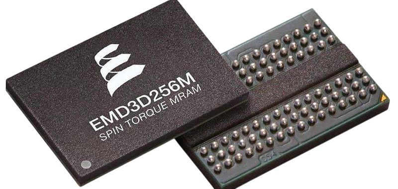

MRAM
MRAM ist eine Speichertechnologie, welche mithilfe von Magnetischen Zuständen speichert (anstelle von elektrischen Zuständen), daher gehört sie zu den modernen Speichertechnologien. MRAM ist durch seine Speichertechnologie nichtflüchtig, schnell und hat eine besonders hohe Lebensdauer. Durch seine fortschrittliche Technologie könnte er langfristig klassische Speicher technologien wie z.B. DRAM ersetzen
Speicherung der Daten:
MRAM speichert Daten mithilfe sogenannter magnetischer Tunnelübergänge (MTJs).Jede Speicherzelle besteht aus zwei magnetischen Schichten:
- Eine feste Schicht mit konstanter Magnetisierung
- Eine freie Schicht, deren Magnetisierung umgepolt werden kann
Je nach Ausrichtung der Magnetisierung ergibt sich ein unterschiedlicher elektrischer Widerstand:
- Parallel → niedriger Widerstand → entspricht einer „1“
- Antiparallel → hoher Widerstand → entspricht einer „0“
Der Zustand wird durch einen Sense Amplifier gelesen. Die Daten sind dabei dauerhaft gespeichert, solange sie nicht bewusst überschrieben werden.
Geschwindigkeit:
MRAM ist vergleichbar schnell wie SRAM, da kein Kondensator geladen/entladen werden muss wie bei DRAM.
Kosten und Komplexität:
Die Herstellung von MRAM ist technologisch anspruchsvoller als die von DRAM oder SRAM, da sie sowohl magnetische als auch elektrische Effekte auf sehr kleinem Raum kombinieren muss. Aktuell ist MRAM daher teurer pro Bit (5-100mal so teuer wie DRAM) und nicht so dicht integrierbar wie DRAM oder Flash – was sich mit Fortschritten in der Fertigungstechnik jedoch stetig verbessert.
Anwendungen:
MRAM wird vor allem dort eingesetzt, wo hohe Geschwindigkeit, Datenhaltbarkeit und hohe Lebensdauer gefordert sind:
- Industriesteuerung
- Luft- und Raumfahrt (da der Speicher durch Magnetspeicherung strahlungsresistent ist
- Sicherheitskritische Systeme
- Cache-Speicher in SSDs oder Mikrocontrollern
Zukunft
In der Zukunft könnte MRAM eine alternative zu herkömmlichen Speichern wie z.B. DRAM. Er könnte in der Zukunft zu einem richtigen Universalspeicher (üblichen Speicher) werden
Flüchtigkeit
Im Gegensatz zu SRAM und DRAM ist MRAM nicht flüchtig. Dies bedeutet das selbst wenn die Stromversorgung unterbrochen ist, der Speicherzustand dennoch erhalten bleibt.
